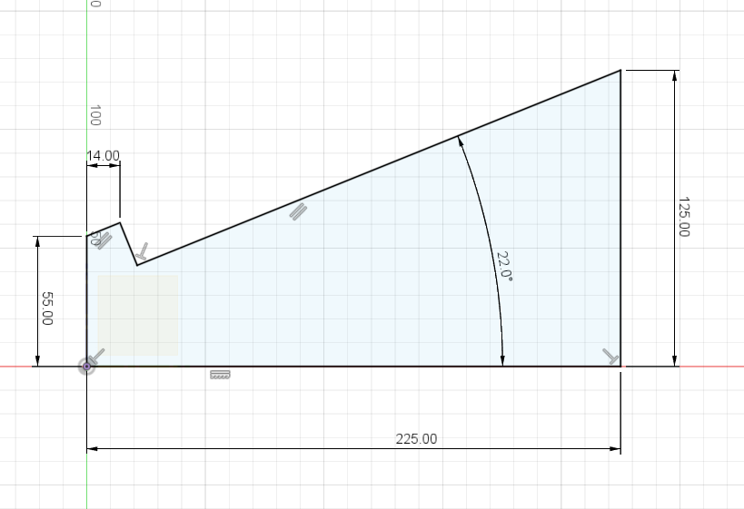
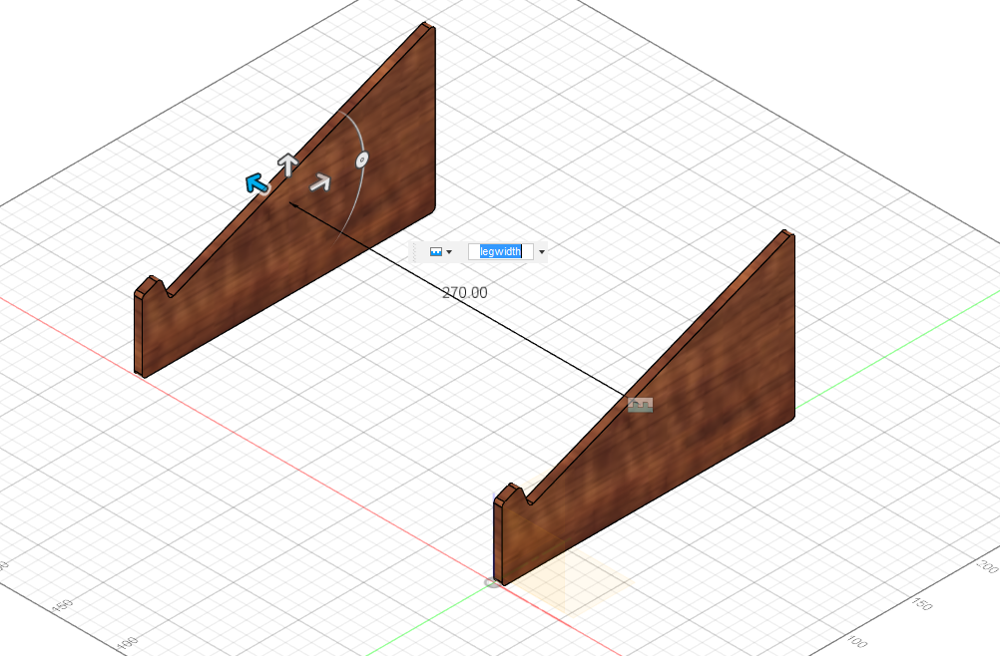
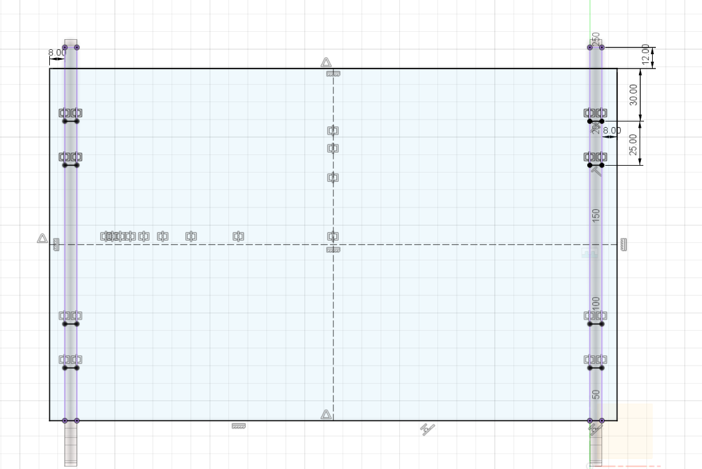
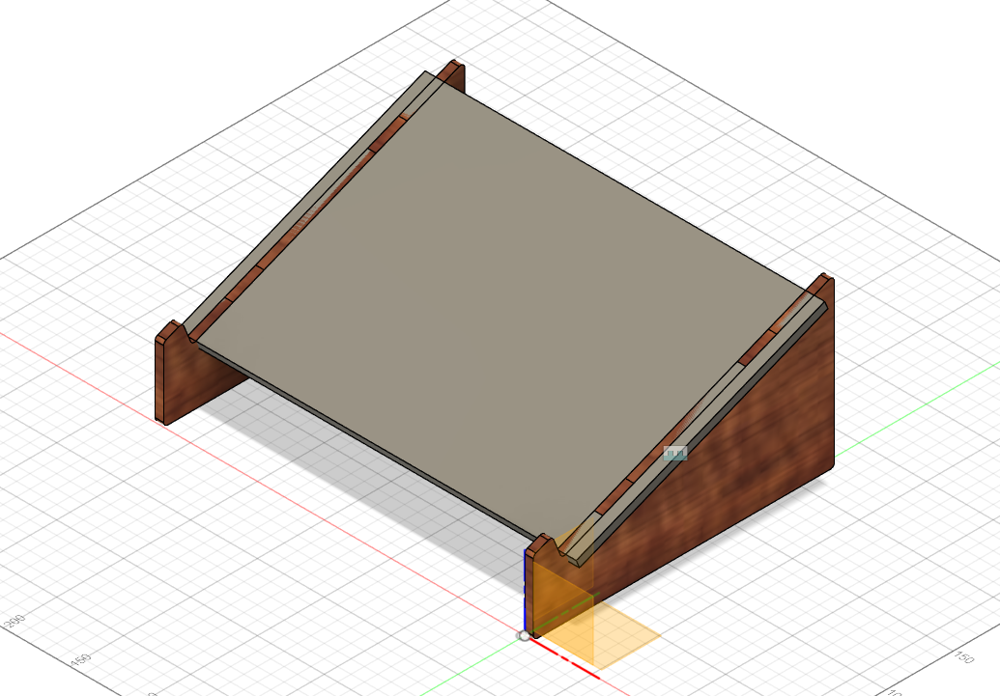
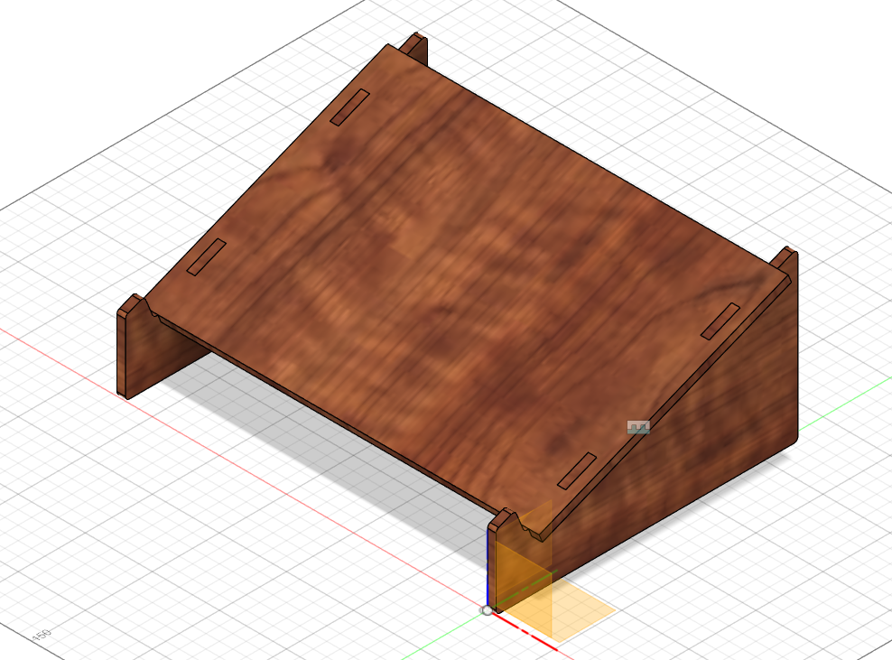
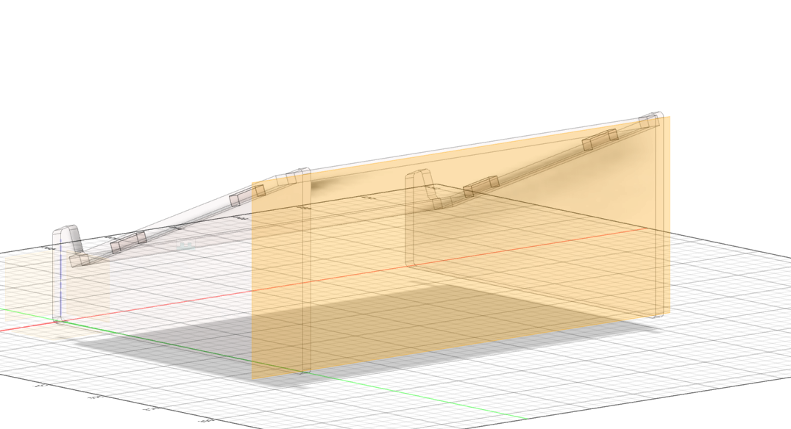
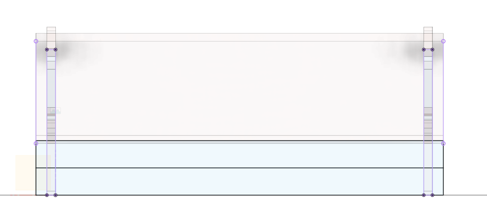
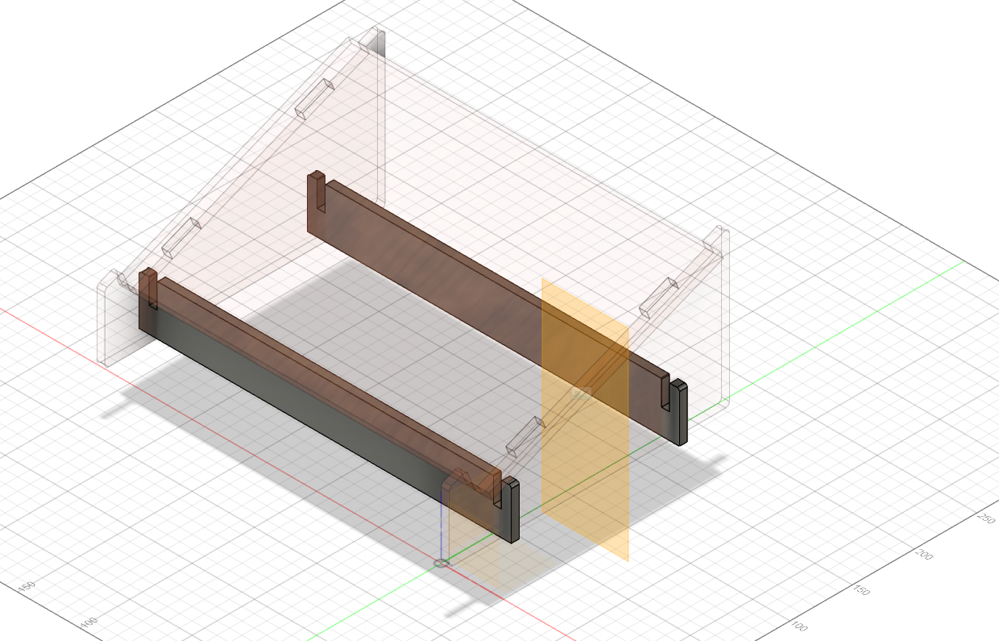

Computer Aided Design
Laptop Stand
Leg Component
I first start by creating a new component and renamed it to Leg. Then i start my skecth on the right side of the origin and turn on the origin tab. i then draw the design with the appropriate dimensions as seen below.
{kind=link}
Click to enlarge
Now is where i set all the different parameters. As mentioned previously, to get the parameters tab it is just Modify > Change Parameters. The purpose of doing this is so that i can change the different measurements easily rather than having to manually change the measuremunts of the sketch one by one. Once that is done, i went on ahead and created new parameters
- Firstly, i created a parameter t which is for the thickness of the leg. I changed the unit to inches(in) and the Expression to 0.25
- Secondly, i creater a parameter legWidth, with the Expression being 270mm.
{kind=link}
Click to enlarge
Once that is done, I went ahead and extruded it by the parameter t. I also went ahead to fillet all the edges after extruding it. For this design we are going to need two legs so i went ahead and right click the Leg tab and copied it. I then right clicked anywhere on the screen and paste it. Once done, i went ahead and pressed Assemble > Joint. I then click on both surfaces of the leg, before changing the Offset Z to our legWidth parameter. It should appear like this:
{kind=link}
Click to enlarge
Top Of Laptop Stand
Now that the leg is more or less done, i moved on to work on the top of the stand. I did the same thing as i did for the legs which was to create a new component and renamed it to Top.I then created a sketch on the slant part of the leg. Then i went Create > Project / Include > Project or simply just press the P key, and click on the left and right slant. once done i drew a rectangle and dimensioned it accordingly. I also extruded downwards by -t as seen below:
{kind=link}

{kind=link}
Click to enlarge
As you can see from the photo above, there are some interference between the top plate and the legs. In order to fix that, go to Modify > Combine, the Target Body is the leg while the Tool Bodies is the plate. Make sure that the Operation is on Cut and Keep Tools is on.By doing that, it will remove the interference. I then filleted the edges for safety purposes. I can then edit the different measurements through the parameters menu.
{kind=link}
Click to enlarge
Leg Support
Our stand is basically almost done. However, if we were to put this together, it would be all wobbly as there is no support. So, for the next step, i will be adding leg supports. The way i do so is by again adding in a new Component and calling it Support, just so it is easier to navigate if i need to edit anything. Next, i did an offset plane on one of the back of the legs. i offset it by -45mm and extended so that it covers the other leg, as seen below.
{kind=link}
Click to enlarge
Once that is done, i then went ahead and created a new sketch on that plane. What i want to do now is see the inner section of the two legs. I can do that by going to Sketch (or Create) > Project / Include > Intersect. For the Selection Filter, i selected bodies, and then i selected the two legs. Once that is done i drew a rectangle and constrained and dimensioned accordingly.Then final process for the sketch is to just draw a line in the middle of the rectangle which is to help us model in a tab that can be fixed on the leg. The final product should look like so.
{kind=link}
Click to enlarge
After doing so, i selected the appropriate sketch profiles that i want to extrude. I then Extrude it by t / 2, Symmetric. You should then see the support. I then decide to create another support, so i decided to mirror it. To do so, i went to Construct > Midplane and selected the front and back face of the legs. This should then produce a plane that is located at the middle of the legs, which acts as a reference point to help us mirror our support later on. I then went to Sketch (OR Create) > Mirror and select Bodies for the pattern type. For the Objects, I selected the support and for the Mirror Plane, I selected the Midplane from before. This then should create another support. Now, i decided that i wanted to round of the edged of the support but am too lazy to click every single edge of the support. I can however ease this process by using the parametric timeline which is located at the bottom left of our screen. What i want to do now is step back one step before the mirror feature, and fillet the edges. Once that is that, i can then use the timeline feature and step forward again. This basically eases our job and allows the mirrored support to be filleted as well. Once all that is done, the final product should look like so.
{kind=link}
Click to enlarge
Final Product
However, if you return back to the top level(right click the top tab and click Activate), you will notice that your support and legs will have interference as you have not subtracted materials. To fix that u simply subtract it again by going to Modify > Combine, the Target Body is the leg while the Tool Bodies is both the support. Make sure that the Operation is on Cut and Keep Tools is on. To check that the operation is done properly, you can simply just hide the support by pressing the eye icon on the left side. You should be able to see tabs. I then just did a fillet on the leg component. Once that is done, the only thing left to do is just resize it according to the size of my laptop through Parameters and boom, its done.

Click to enlarge
Laptop Stand FileHere is an animation of my Laptop Stand.